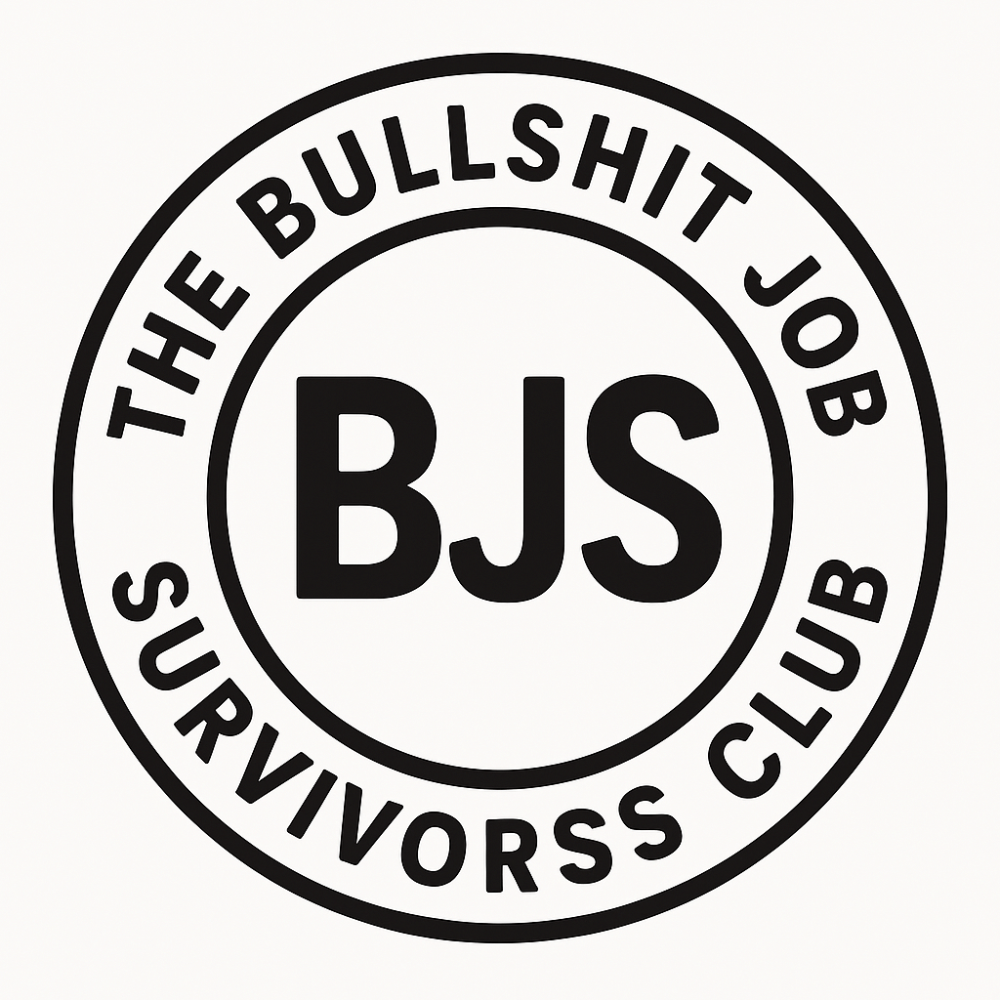

狗屁工作受害者互助會
你是否也曾意識到，自己的工作既無聊又無意義，只因為薪水而不敢離職？
你或許也曾勇敢辭職，試著去找一份「不一樣的工作」，但幾年過去，你發現——工作，都是那個死樣子。
你試過失敗主義者的建議，試著讓自己習慣麻木，可惜你不是木頭，無法假裝沒感覺。
曾經心靈雞湯照三餐喝，但現實沒半點改變。你還是每天強迫自己上班，連原本帶著目的的娛樂，也變得枯燥。
如果你也是那種在狗屁工作的夾縫中，仍然想創作點什麼的人——狗屁工作受害者互助會，就是為你而存在的。我們一起取暖，彼此打氣。
歡迎加入 Discord